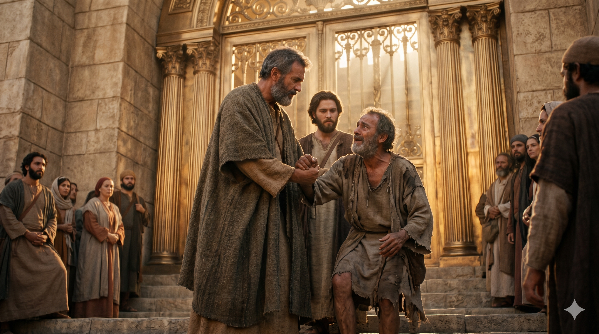
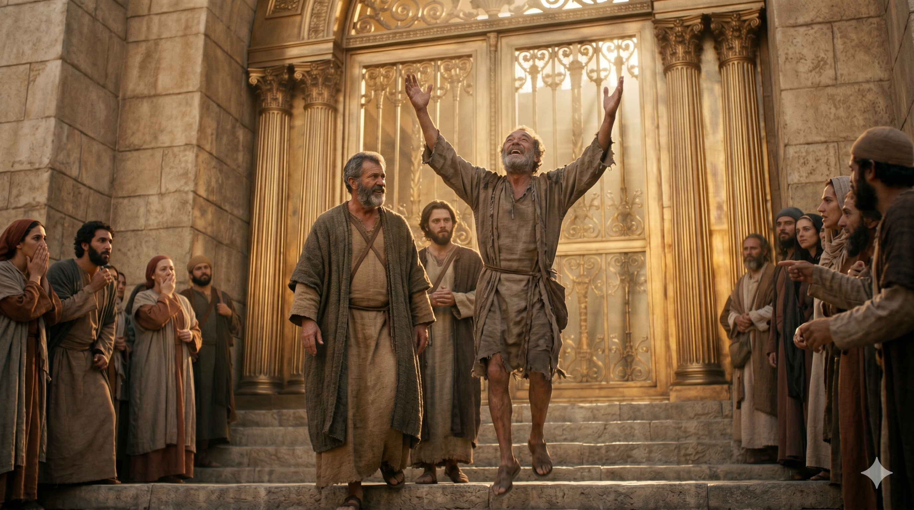

예루살렘 성전 미문 앞에서 베드로가 앉은뱅이의 손을 잡아 일으키는 장면 — 황금빛 석양이 물드는 성전 계단
베드로가 이르되 은과 금은 내게 없거니와 내게 있는 이것을 네게 주노니 나사렛 예수 그리스도의 이름으로 일어나 걸으라 하고 오른손을 잡아 일으키니 발과 발목이 곧 힘을 얻고 뛰어 서서 걸으며 그들과 함께 성전으로 들어가면서 걷기도 하고 뛰기도 하며 하나님을 찬송하니 — 사도행전 3:6–8
오순절 이후 베드로와 요한은 오후 세 시 기도 시간에 성전으로 올라가고 있었습니다. 예루살렘 성전의 '미문(美門, Beautiful Gate)'은 고린도 청동으로 만들어진 거대한 문으로, 성전 뜰로 들어가는 가장 화려한 관문이었습니다. 그 문 앞에는 날마다 구걸하러 나오는 이가 있었는데, 나면서부터 걷지 못한 사람이었습니다. 사십여 년 동안(행 4:22) 매일 이 문 앞에 놓여 있었습니다. 성전을 매일 보면서도 한 번도 들어가지 못한 사람이었습니다. 그가 베드로와 요한을 바라보며 무언가를 구했습니다. 그것은 돈이었습니다. 그러나 베드로는 그를 주목하며 "우리를 보라" 합니다. 그리고 예상치 못한 선언이 이어집니다. "은과 금은 내게 없거니와 내게 있는 이것을 네게 주노니."
이 고백은 가난의 시인이 아니라 능력의 선언입니다. 베드로에게는 세상이 살 수 없는 것, 즉 나사렛 예수 그리스도의 이름이 있었습니다. 그 이름으로 오른손을 잡아 일으키자 발과 발목에 즉시 힘이 들어왔습니다. 태어나서 단 한 번도 서 보지 못했던 두 발로, 그는 걷고 뛰고 하나님을 찬송하며 성전 안으로 들어갔습니다. 그 모습을 본 사람들이 심히 놀랍게 여겼고, 이것이 또 하나의 복음 선포의 기회가 되었습니다(행 3:11–26). 그가 원한 것은 생존이었지만, 그가 받은 것은 예배였습니다 — 태어나 처음으로 성전 안에 걸어 들어간 것입니다.

성전 안에서 걷고 뛰며 하나님을 찬송하는 치유받은 사람, 그를 둘러싸고 놀라는 군중들
우리는 종종 내가 줄 수 없는 것에 집중하며 무력함을 느낍니다. 충분한 돈이 없어서, 충분한 능력이 없어서, 충분한 시간이 없어서 라고 생각합니다. 그러나 베드로는 자신이 없는 것을 먼저 고백한 다음, 자신이 가진 것을 주었습니다. 우리도 내게 없는 것이 아니라 내게 있는 것을 먼저 살펴야 합니다. 예수 그리스도의 이름, 그분과의 살아있는 관계, 성령의 능력 — 이것이 세상 어떤 금은보다 귀한 것입니다.
또한 베드로는 말만 하지 않았습니다. 오른손을 잡아 일으켰습니다. 믿음은 행동과 함께 갑니다. 치유의 역사가 일어나기 위해서는 먼저 손을 내밀어야 했습니다. 오늘 당신 곁의 누군가가 도움을 기다리고 있습니까? 당신이 줄 수 없는 것을 걱정하기 전에, 당신이 줄 수 있는 것을 먼저 내밀어 보십시오. 하나님은 그 순종의 손을 통해 일하십니다.
은도 없고 금도 없었지만, 베드로는 빈손이 아니었습니다.
나사렛 예수의 이름 하나로 사십 년을 앉아 있던 사람이 뛰었습니다.
당신이 가진 가장 귀한 것은 무엇입니까?
오늘, 그것을 누군가에게 내미십시오.